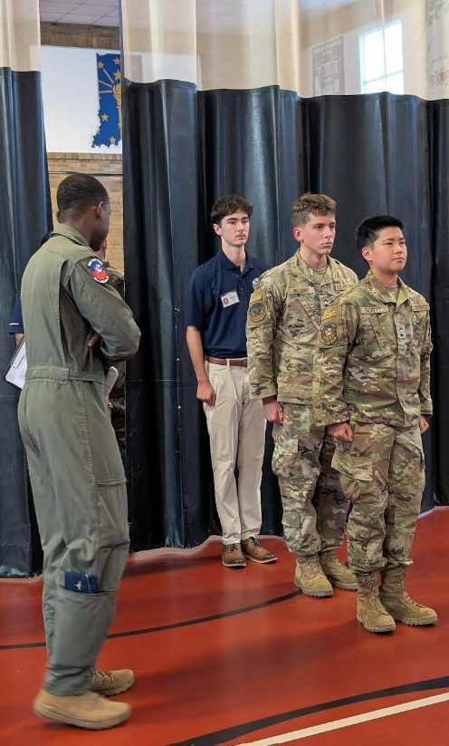

AFROTC · DETACHMENT 215 · 2024–2025
LEADERSHIP
IN ACTION.
As an Air Force ROTC cadet, I dedicated 13+ hours each week to leadership and teamwork development, physical training, and project planning. I also had the opportunity to serve as flight commander during training.
FEATURED MOMENT
A TIME WHERE I WAS FLIGHT COMMANDER.
A moment from ROTC field training that gave me the chance to practice leading a team.

MOMENTS FROM ROTC
TRAINING & TEAMWORK.

